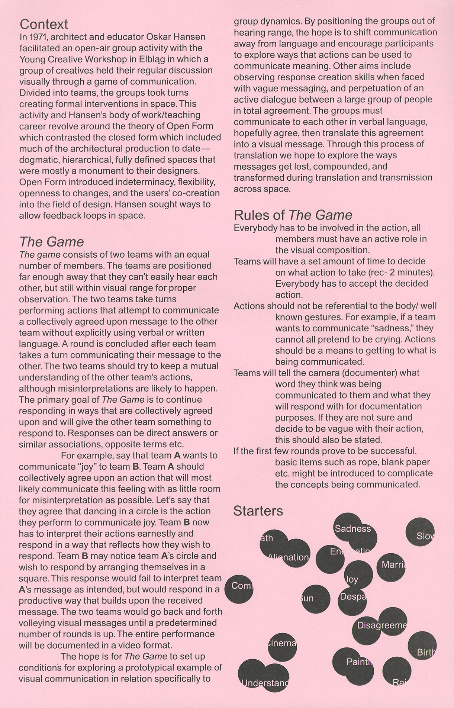

The Game
An experiment in visual communication which involives two teams responding to eachother over distances without using written or spoken language. The Game explores simple representations of feedback loops across and within groups of people, challenging ideas around how we communicate with one-another, and with "the other".
Together with Zeynep Coşansu and Razan Alhamdan, The Game was staged at a park in Richmond VA using two teams of two players each.
Typeface
Areal
Year
2026